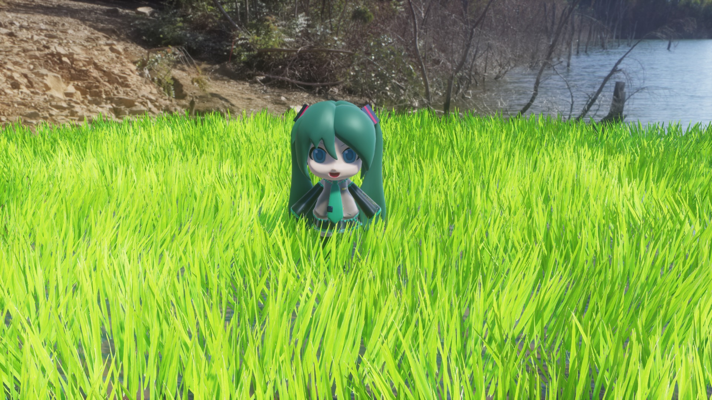

Version 4.60から新しい舞台装置エフェクトとしてKusaが追加されました。StageSet/Kusaフォルダに入っています。sdPBR専用のエフェクトで、sdPBR.pmxとsdPBRGBuffer.xがMMDに既にドロップされている事を前提に動作します。

すず様作 ミクダヨーさん をお借りしました
風になびく芝生や草原を作ることが出来ます。本数少なめで軽いw.pmxと、本数が多く重いwww.pmxを用意してあります。生やしたい範囲やPCの性能などに併せて好きな方をどうぞ。おそらく静止画に出力すると草が完全に立った状態にしかならないので、動画専用です。
MMDへw.pmxまたはwww.pmxをドロップした後、www.vmdファイルをドロップするとお薦め設定が読み込まれて画面に草原が表示されます。見た目のカスタマイズの例としては以下のような事が出来ます
collidersフォルダに入っているkusaO*.xファイルをドロップすると草地を押しのける球状の当たり判定を置くことが出来ます。球の半径はSiモーフで変えられます。
w.pmxおよびwww.vmdをドロップしただけの状態ではシャドウマップやSSAOが正しく設定されてません。ちょっと面倒なんですけど、さらに設定をする必要が有ります。MMEffect-エフェクト割り当てダイアログを開いてw.pmx(またはwww.pmx)に対して以下の設定を行ってください
デフォルトの設定では他のポストエフェクトなどから草の位置が正確にとれません。このため、DoFなどが正しく掛からなくなります。これを防ぐためには、DoFエフェクトのタブでocean.pmxに対して、_map_www_depth.fxを指定してください。
デフォルトの設定では草の高さはセンターボーンの高さに揃って生えるので凹凸のある背景モデルでは使いづらく感じるかもしれません。そうした場合は、MMEffectダイアログにwwwYというタブが追加されているので、そのタブを選択してモデル毎に割り当てられている_Y_www_thru.fxを以下の中から選択して変更してください
| _Y_www_here.fx | モデルの上の面の高さに沿うように草を生やします |
| _Y_www_zero.fx | このモデルが一番上(Y座標値が一番大きい)の場合、w.pmxのセンターボーンのY座標に有った位置に草を生やします |
| _Y_www_none.fx | このモデルが一番上(Y座標値が一番大きい)の場合、草が生えません |
| _Y_www_thru.fx | このモデルは草の生える高さの決定に影響を与えません |
collidersフォルダ内にkusaO0～7.xというアクセサリがあるので、それをドロップするとアクセサリの周囲の草が倒れるようになります。Siパラメータで障害物の大きさを指定できます。Si=1の時、半径10MMD距離になります。
障害物が草の付け根と重なっている場合におしのける効果が出るので、地面にめり込ませる感じで球体を配置しないと思ったような効果が出ないと思います。踊っているモデルの場合は両足ボーンにSi=0.5～1程度の大きめのサイズにしてくっつけると分かりやすいと思います。
障害物の有効範囲は同じくcollidersフォルダ内のwwwDisplay.xをドロップすると白い球体として表示されるようになります。Trパラメータで不透明度を指定できるので活用してください。
wwwmask.pngというテクスチャを編集すると、ピクセルが黒い所は草が生えなくなり、白い所にだけ草が生えるようになります。グレーにすると小ぶりの草が生えます。同梱のwwwmask.pngは全部白が描き込まれており、まんべんなく草が生えます。
| センター | 草地の中心を指定します |
| [左上] : 草の形状・配置の設定 | |
| 範囲 | 草地の範囲を狭く/広くします |
| 高さ | 草1本ずつの長さを指定します |
| 太さ | 草1本ずつの幅を指定します |
| 硬さ | モーフの値が低いと柔らかい草になり、風を受けると根元から倒れやすくなります。モーフの値が高い時は硬い感じになり、先端だけが折れるようになります |
| 円形配置 | モーフが0の時は正方形の範囲に配置され、1の時は円形の範囲に配置されます |
| [右上] : 風の設定 | |
| ドヨドヨ度 | 周期と向きのはっきりした層流が主体の風が吹くようになります |
| ザワザワ度 | 個々の草がバラバラに動くようにまばらな風が吹くようになります |
| 風向き | 風の吹く全体的な方向を指定します。モーフを0から1に上げると一回転し、モーフの値が0の時と1の時では見た目が同じになります |
| [左下] : 草の色についての設定 | |
| H/S/V | 草の色相/彩度/明度を指定します |
| ±H | 草ごとの色相の変化を指定します |
| 明るく | 草をより明るく表示します |
| [右下] : その他の設定 | |
| テストモード | 草が受けている風向きを色で表示します。X成分が赤、Z成分を緑としています。 |
{kind=link}